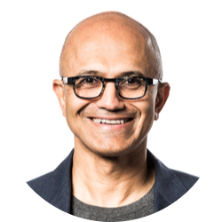

|  |
Satya NadellaBorn: August 1967, India Education: University of Chicago Occupation: Entrepreneur Title: Chairman and CEO of Microsoft |
Satya Narayana Nadella is an Indian-American business executive. He is the executive chairman and CEO of Microsoft, succeeding Steve Ballmer in 2014 as CEO and John W. Thompson in 2021 as chairman. Before becoming CEO, he was the executive vice president of Microsoft's cloud and enterprise group, responsible for building and running the company's computing platforms.
Nadella worked at Sun Microsystems as a member of its technology staff before joining Microsoft in 1992.
Nadella has spearheaded Microsoft's transition to cloud computing and the creation of one of the world's largest cloud infrastructures. He has also held various leadership roles in the company's online services, business, server and tools, and cloud and enterprise divisions, boosting the revenue and innovation of each segment. In 2016, he earned $84.5 million in total compensation.
Nadella became the third CEO of Microsoft in 2014, and has since led the company to embrace open technologies, acquire major platforms like Mojang, Xamarin, LinkedIn, and GitHub, and redefine its mission and culture. He also faced criticism for his remarks on women's pay in 2014, which he later apologized for. Under his leadership, Microsoft's stock price has soared to new heights.
| Active listening skills | ⭐⭐⭐⭐⭐ | Communication skills | ⭐⭐⭐⭐⭐ |
| Computer skills | ⭐⭐⭐⭐⭐ | Leadership skills | ⭐⭐⭐⭐⭐ |
| Management skills | ⭐⭐⭐⭐⭐ | Problem-solving skills | ⭐⭐⭐⭐⭐ |
| Time management skills | ⭐⭐⭐⭐⭐ |